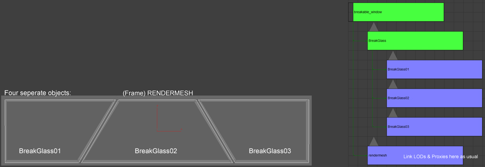
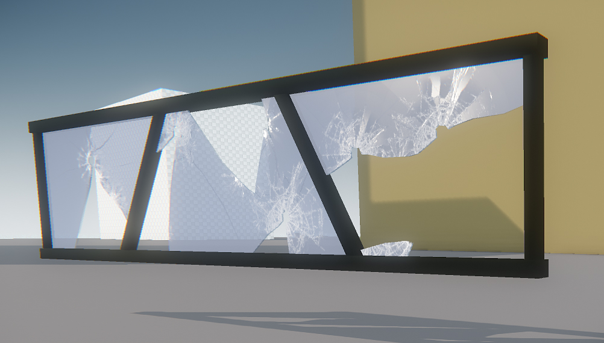
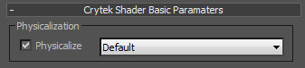
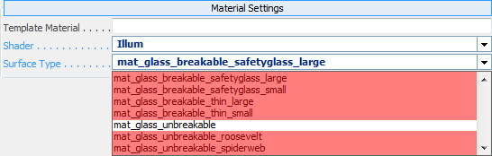

Overview
Breakable glass is the most common used type of breakability and allows you to create glass the player can destroy.
Download an example max file with different glass setups glass_example.rar. Extract to: GameSDK\Objects\props\glass_example
General Setup Guidelines
Setup in 3DS Max
- Use a dummy helper as an Export Node (=root of the object)- its name will be used to name the cgf.
- Every single window (glass piece) should be its own node to work properly. Do not merge nodes.
- Keep the total amount of polygons below 200 triangles. If you need more triangles in the glass object, create a separate object.
- Glass panes should face the same direction. if the angle between the panes is too big (>10 degrees), split them into separate objects.
- Name your breakable Glass object "BreakGlass_xx" (xx = 01,02,03,...) to keep asset debugging simple.
- Create a Multi/Sub-Object Material for the complete object and create a unique Mat ID for the breakable glass objects. All faces of a breakable glass object must have this mat ID assigned to work properly.


- Link your breakable glass node directly to the Export Node.
- Align the breakable glass node's pivot to the Export Node (Root dummy helper) and reset transformations.
- Turn on Physics for the glass objects Mat ID: Under Physicalization, enable Physicalize and set it to Default.
- Do not assign this Mat ID to any other part of your mesh than your breakable glass node!

- Do not create LOD's or collision geometry for your breakable Glass Node.
- Take extra care to not assign the glass Mat ID to the render mesh or its LOD's.
Setup in Sandbox
Choose one of these surface types to enable the breakable glass functionality in the Game or Sandbox:
- mat_glass_breakable_thin_small
- mat_glass_breakable_thin_large
- mat_glass_breakable_safetyglass_small
- mat_glass_breakable_safetyglass_large
- mat_glass_unbreakable_roosevelt
- mat_glass_unbreakable_spiderweb

- The surface will change procedurally to another type. There is no need to create a second "_broken" material.
Fully breakable glass
Surface types which support this functionality:
- mat_glass_breakable_thin_small
- mat_glass_breakable_thin_large
- mat_glass_breakable_safetyglass_small
- mat_glass_breakable_safetyglass_large
..._small should be used for smaller glass planes the player can get close to (higher tessellation, higher detail in the glass chunks, more expensive)
..._large should be used for larger glass planes the player can´t get too close to (lower tessellation, lower detail in the glass chunks, less expensive)
Use for windows that the player can destroy and walk through, like glass windows on the ground levels of interiors, car windows, etc. Will disappear completely when shot.
Breakable glass with material switch
Surface types which support this functionality:
- mat_glass_unbreakable_roosevelt
- mat_glass_unbreakable_spiderweb
Use for windows on large building facades that should never completely disappear when shot.
Non breakable glass with no special behavior when shot
A window pane that will show a spiderweb decal and spawn particles when being hit by a bullet.
Polygons showing this effect can be part of the building mesh, can have LOD's. no need for a separate node.
Use for glass that is far away from the player on higher up levels of facades or background objects.
Surface types which support this functionality:
- mat_glass_unbreakable
Restrictions
- Breakable glass must be simple shapes with little to no curvature - ideally boxes or or floating planes with little tessellation. Try to keep the Polycount below 100 tris per glass shell.
- The amount of unique breakable glass nodes per object should not exceed 5.
- Geometric entities do not support breakable glass - Place any object with breakable glass as basic Entity with rigid body turned off or as a normal cgf.
- Breakable glass does not support uvBorders on your texture. It must be mapped to one unique area on your texture. When shot, each uv-shell will break by itself.
- Having a material ID that contains a breakable glass surface type in your material will break statobjmerging on the object. For jointed breakables that must get run-time merged, you need to separate the breakable glass into its own cgf using its own mtl. (Check with e_debug_draw 1 - Yellow Frame, merged=good, blue frame, unmerged=bad).
- If your breakable glass object is encapsulated by a proxy of your render mesh, make sure to set a pierceable surface type on the proxies (g_bulletpenetrationdebug 1).
- Your glass node must have one physicalized matID assigned. Any other render node must not contain a physicalized matID with a breakable glass surface type assigned.
Troubleshooting/FAQs
Q: The glass disappears or moves when shot
A: Center the pivot to your export dummy helper and reset transformations on your break Glass nodes
Q: I get the following error message: "Error in Calculating Physics Mesh, Node "Merged" in file [path] contains both physicalized render geometry and a physics proxy."
A: Make sure "Merge All Nodes" is NOT flagged in the export settings. The glass node and the render mesh need to be linked to a dummy which is exported via "Export File per Node".
Q: The glass does not break when shot
A: Make sure the material is set to Physicalized "Default" in 3dsmax. Check if the glass objects show up physicalized when p_draw_helpers is enabled.
If not, re-export with the correct Physicalization settings until it shows up physicalized. Check if the object is placed as a Geom. Entity - If so, change to brush or Basic Entity with Rigid body turned off.
Q: The glass still does not break when shot
A: Check that it is set to a breakable surface type in the submatID. Use any of the mat_glass_breakable_... for testing.
Check that the proxy encapsulating the Glass is set to a pierceable surface type (g_bulletPenetrationDebug 1)
Q: When shooting the glass, the console displays "geometry not thin enough, breaking denied"
A: Make sure your breakable glass node only contains one material ID. If so, your geometry is too complex or oriented into too many different directions.
Separate your breakGlass geometry into smaller pieces and create additional breakGlass nodes.
Q: My object disappears when shooting the glass
A: A face of your render mesh has a breakable glass material id assigned. Your break_Glass node has more then one material id assigned.
Q: Several glass panes break when i shot at one
A: The physics proxy was too close together and got optimized. Try to put them in separate objects.
Q: I get errors about "Physics mesh has too many islands" and "Geometry not suitable for breaking, breaking denied"
A: Make sure you haven't set the physics proxy to use the "Glass" surface type.
The physics proxy should only be created for a non-glass render mesh, such as the frame. It should never use the Glass (breakable) surface type.